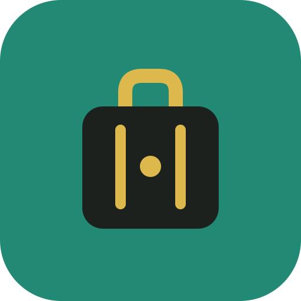

Conecta con tu cuenta de Google para consultar y editar la agenda privada del viaje.
En Android, abre el menú del navegador y elige Instalar aplicación o Añadir a pantalla de inicio.
En iPhone, abre esta página en Safari, pulsa Compartir y después Añadir a pantalla de inicio.
La agenda necesita conexión a internet. Al volver a abrirla puede pedirte conectar con Google.